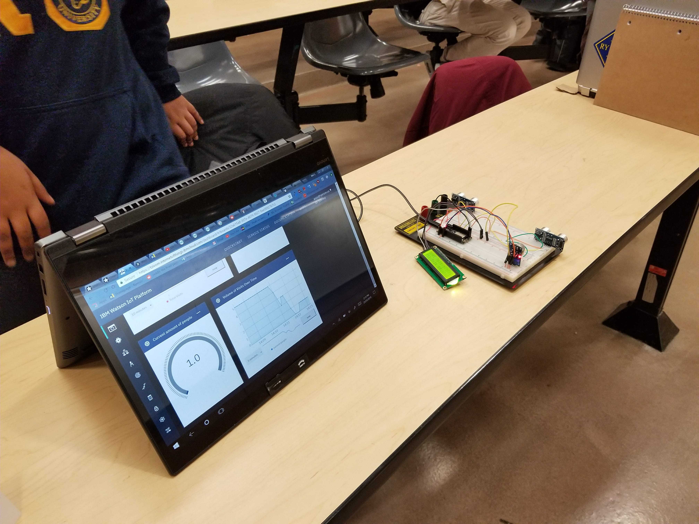

This event took place on
IoT for SmartCities Hackathon took place at Ryerson from March 24th to March 25th 2018. This event was hosted by IEEE Ryerson Student Chapter in cooperation with the city of Brampton, IBM and the Department of Electrical and Computer Engineering I worked in a group with two other people, Alari Tork and Wei (Drew) Yu. We were told to create something that met the following requirements:
My group had decided that we would create a sensor that constantly tracks the amount of traffic in washrooms. This would be accomplished by using two sensors and pacing them a few centimeters apart from each other. The sensor that was set off first would distinguish if a person was entering or leaving the washroom. We connected the sensor to an LCD screen that would be attached outside the washroom. The LCD screen counted the number of total people in the washroom, and the total number of people who had used the washroom that day. This information would be sent via a web app to the janitors to let them know when the washroom needed to be cleaned. We also attached a gas sensor that was a proof of concept for an ammonia sensor. This sensor would detect when there was high levels of ammonia, and would also send this information to janitors, this would be so the janitors would know when to clean the washrooms.
Ryerson Hacker Cup II took place on Febrary 15th, 2018 at Ryerson University hosted by Ryerson Electrical and Computer Student Society. In this event, similar to the previous Ryerson Hacker Cup event mentioned below, we were given a set of questions and told to finish as many as we could before the 3 hour time limit ran out. The questions ranged from easy to difficult. In total we had 4 questions to solve on Kattis, a Hackathon Website. I had only managed to finish and submit the first question, 'Akcija.' The source code is posted on GitHub. Below are some pictures taken during the event.
Ryerson Hacker Cup II took place on Febrary 6th, 2018 at Ryerson University and was hosted by Ryerson Electrical and Computer Student Society (RECESS). This was the first Hackathon that I had ever went to. In the contest we were given a set of questions and told to finish as many as we could before the 3 hour time limit ran out. The questions ranged from easy to difficult. In total we had 7 questions to solve on a website called Kattis. Unfortunately, I did not manage to finish any of the questions within the time limit. However, instead I finished the first question, 'T9 Spelling' the following day. The source code is posted on GitHub. Below are some pictures taking during the Hacker Cup by RECESS.